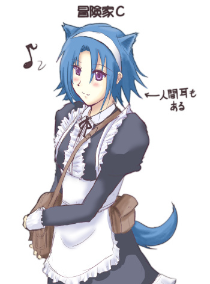

■2016-04-30 (土) 片道勇者開発記 13 発売！▼
と、いうことでついに『片道勇者開発記』、発売です！
予定通りのウェブマネー500円（税込）なんですが、
これだとさすがに買いにくい方も多いと思いますので
Paypalの導入も検討したいなと考えています。
（契約や審査にも時間がかかるので何ヶ月後になるかは不明です）
とりあえず、今すぐ購入されたい方はこちらから！
↓
【片道勇者開発記 公式ページ】
体験版用に書き下ろした冒険家C 落書き

※頭の上にケモ耳が生えてしまった半獣人は元の耳も含めて4つ耳になってしまいます。
ネムリみたいな横ケモ耳は、元の人間耳と入れ替わっています。
さて、この『片道勇者開発記』、一体どんな内容が入っているかというと……。
・【1章】 片道勇者に当然のように入っている要素が一体どういう意図で
入れられて生まれるまでにどんな試行錯誤があったか
・【2章】 面白く感じなかったゲームを面白く変えるためにいかなる考え方をして
何から学んで、どう良さを取り入れていったか
・【3章】 コンシューマゲーム展開時の、かなり正確な裏話
・【4章】片道勇者の設定資料集やボツネタ集、全データへの私からのツッコミ集
・【5章】そこそこ評価されている印象のサイドストーリーの小説
という感じなので、片道勇者ファンの方以外に、
ゲーム開発者の人にもおすすめできるかもしれません。
私がどう考えていたかや、失敗談からどう対策したかまで含めて書いてるので、
判断重視のゲームを作られる際にはこの本が経験値になると思います。
【4章】の設定資料集は『片道勇者プラス』までの内容を含んでいますが、
【5章】サイドストーリーは『片道勇者』（無印版）だけしか遊んでおられない方にも
物語としてほぼ完全にお楽しみいただける内容です。
120％まで目指すなら、フリーダ王女のエピローグまで見ていただいていると、
＋αの分まで含めてお楽しみいただけるかもしれませんね。
【今後の展開】
『片道勇者開発記』の内容の評判自体は思ったよりいいみたいで、
これならレビューで★1乱舞ということもなさそうなので、
いずれKindleでも発売しようかなと考え始めています。
ただ、今あるゲーム版はこれはこれでたぶん背景がきれいだったりBGMが流れたり、
エンドロールまで付いてたりするので、フルでお楽しみいただきたい方は
ぜひ現状あるゲーム版をどうぞ！ という形になると思います。
もしかしたら『片道勇者TRPG』と連携する形でチャンスがあるかもしれないので、
可能ならば6/20頃までのKindle発売を目指すべきなのかな、と考えています。
時間的にやれるかどうか分かりませんが、TRPGのお仕事もしつつ、
ひとまず次はそれを目標にしていきます。
あと、バグやデータ抜けなどもご報告をいただいているので、
それらについても早々に対応していきます。
それでは、『片道勇者開発記』、よければぜひ、お楽しみください！
2016-04-30 (土)  カテゴリ: 片道勇者
カテゴリ: 片道勇者
 カテゴリ: 片道勇者
カテゴリ: 片道勇者